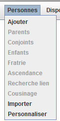
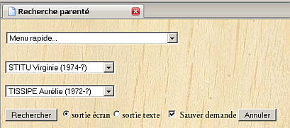
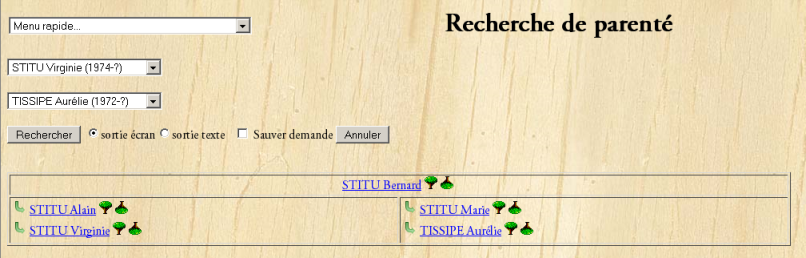
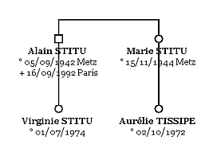

Ce menu propose des actions identiques à celles proposées par les boutons. Il s'agit de :

Ce choix permet de dessiner un arbre à partir d'une recherche de parenté faite dans Généamania.
En premier lieu, il faut faire la recherche dans Généamania en demandant de sauver la demande, par exemple :

Le fait de cocher l'option "Sauver demande" mémorise cette demande. Cela permet, dans GénéGraphe, de récupérer cette demande et de dessiner l'arbre correspondant. Il suffit de choisir la ligne "Cousinage" du menu "Personnes" pour que GénéGraphe génère l'arbre.
Généamania vous propose ce résultat de recherche

et GénéGraphe vous propose ceci
